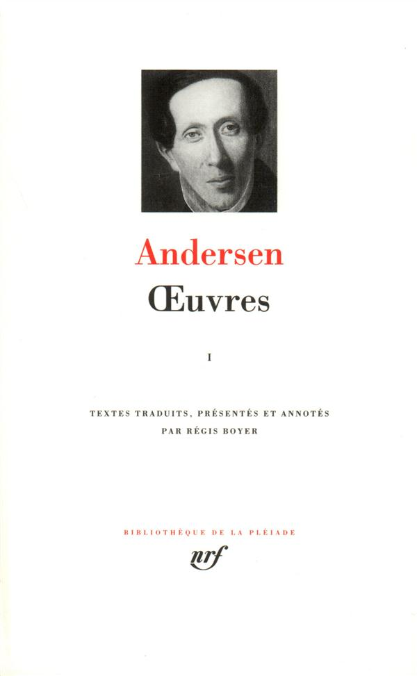
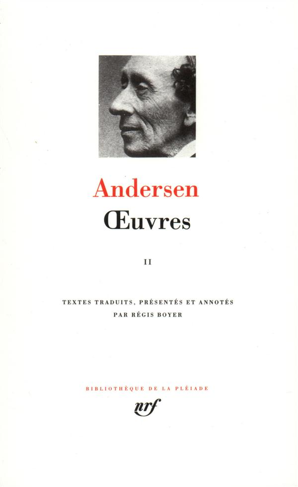

75€
Traduit du danois par Régis Boyer
Illustrations de Lorenz Frølich et Vilhelm Pedersen
Publié le 25 Novembre 1992
Bibliothèque de la Pléiade, n°394
Achevé d'imprimer le 5 octobre 1992
1648 pages, ill., rel. Peau, 105 x 170 mm
ISBN : 9782070112463
Contes racontés aux enfants - Le Fantôme - Les Galoches du bonheur - Nouveaux contes - Contes illustrés par Vilhelm Pedersen - Histoires - Histoires illustrées par Vilhelm Pedersen - Nouveaux contes et histoires - Contes et histoires - Contes recueillis dans les « Œuvres complètes » de 1868 - La Dryade - Trois nouveaux contes et histoires - Contes non recueillis dans les « Œuvres complètes » de 1868 - Livre d'images sans images.
Le tome l de cette édition contient l'intégralité des contes d'Andersen, dont certains étaient inédits en français, et tous les textes qui doivent leur être rattachés. Régis Boyer s'est chargé d'établir une traduction entièrement nouvelle – une traduction, et non pas, comme souvent lorsqu'il s'agit de contes, une adaptation, ce qui va bouleverser quelques idées reçues. Le volume est illustré de 155 dessins, choisis parmi ceux qui figurent dans les éditions parues du vivant de l'auteur, et reproduits pour la première fois en France. Un tel souci de fidélité aux textes et aux images a ses raisons. Parce qu'Andersen appartient au cercle étroit des écrivains universels, ceux dont les thèmes d'inspiration sont passés dans l'irnaginaire commun, ses œuvres sont plus célèbres qu'elles ne sont lues ; on en retient l'esprit, au prix de quelques contresens, et l'on en oublie parfois la lettre, oubliant du même coup que l'un des secrets de leur séduction doit être recherché dans la poétique : le travail qu'opère Andersen sur le langage est, en soi, créateur d'un univers où la normalité se situe délibérément dans l'invraisemblable, où l'immatériel accède à la réalité – quitte à la nier, comrne l'Ombre, dans le conte qui porte ce titre, dénie à l'Homme son droit à l'existence, où la parole, enfin, est un instrument de création du réel. Les escrocs des Habits neufs de l'empereur ne tissent que le néant mais, en prétendant fabriquer des vêtements que ne pourront jamais voir les imbéciles, ils parviennent à persuader tout un peuple que des habits de vent sont réels. Il faut un enfant – infans, celui qui n'a pas droit à la parole – pour dénoncer le scandale. Que les contes d'Andersen soient ou ne soient pas destinés aux enfants (vaste débat), la place qu'y tient l'enfance a de quoi faire réfléchir les adultes.

Hans Christian Andersen
Oeuvres
Tome II
73.50€
{kind=link}